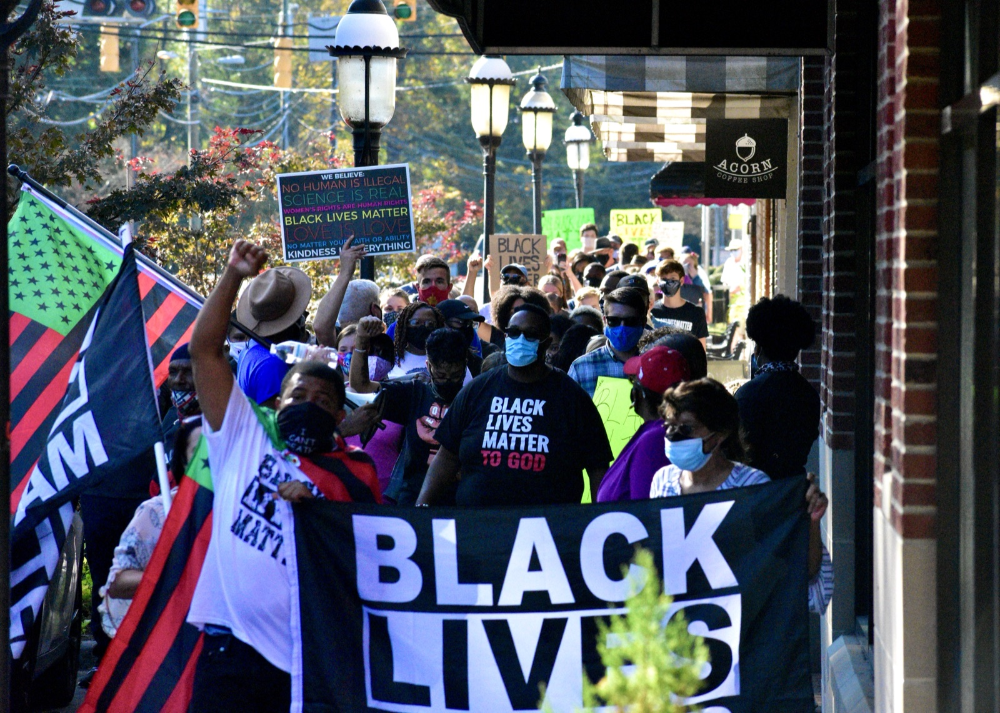
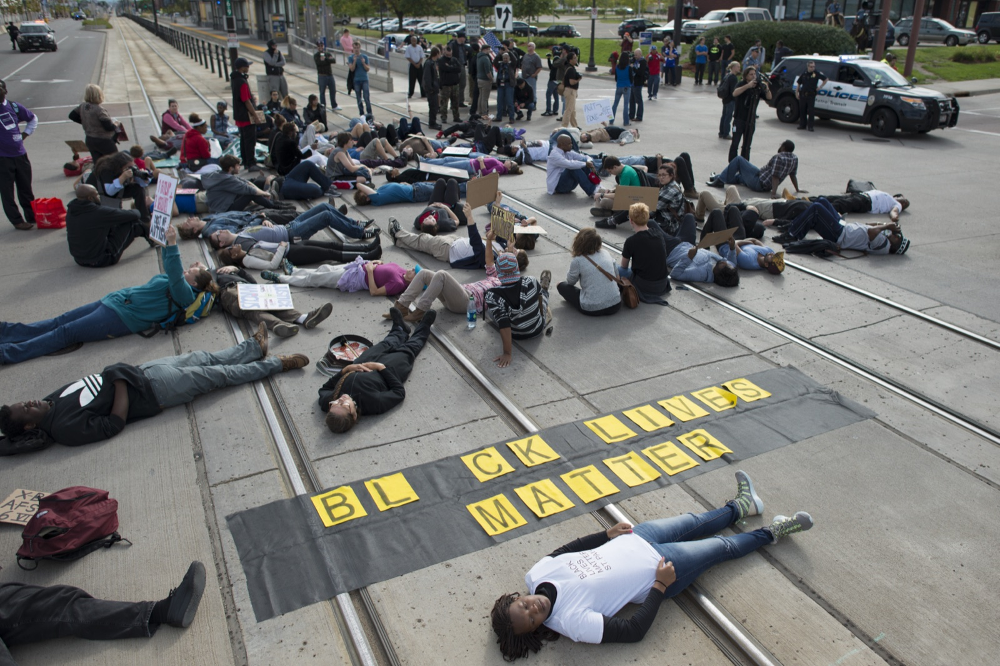
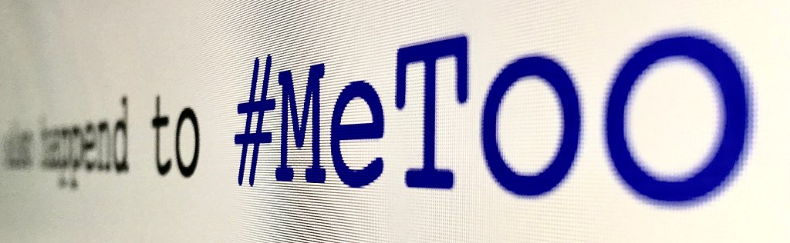

Dia-Pol

A study of opinion dynamics on social media
When do debates on social media yield dialogue? What triggers polarization?
Using the cases of the Black Lives Matter and Me Too movements, we investigate outcomes of interactions between the Black Lives Matter and Me Too, and their countermovements (e.g., Blue lives matter, White lives matter, or I did it).
Dia-Pol is a multi-disciplinary project, which applies topic modeling and deep learning techniques to test social movement theories, funded by the European Commission’s Marie Curie Individual Fellowship 2020 grant (H2020-MSCA-IF-2020).

